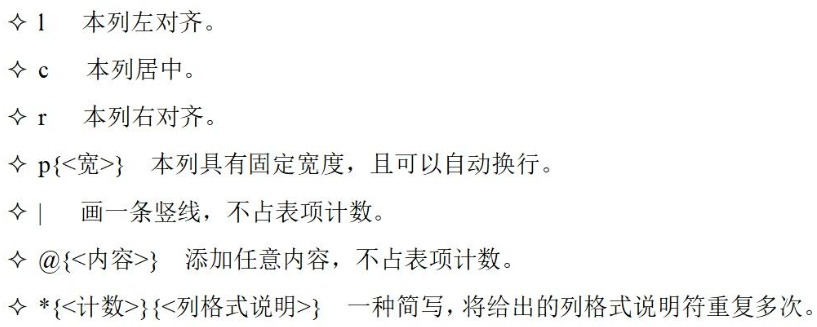
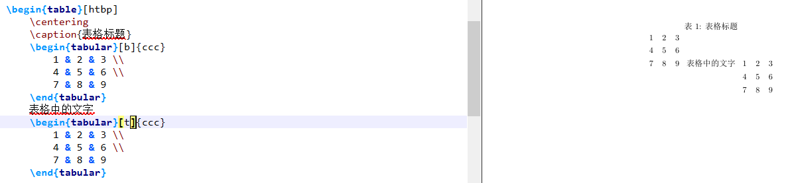

LaTeX 是一种“非所见即所得”的排版系统，用户需要输入特定的代码，保存在后缀为 .tex 的文件中，通过编译得到所需要的 pdf 文件；
文档类型
Tex 有多种文档类型可选，如下是常用的几种类型：
- 英文：book、article、beamer；
- 中文：ctexbook、ctexart、ctexbeamer；
不同的文件类型，编写的过程中也会有一定的差异，如果直接修改文件类型的话，甚至会报错；
一般在 \documentclass 处设置基本参数；通常设置默认字体大小为 12pt，纸张大小为 A4，单面打印：
1 | \documentclass[12pt, a4paper, oneside]{ctexart} |
页面设置
使用 \geometry{} 设置页边距（需要 geometry 宏包）：
1 | \usepackage{geometry} |
使用 \linespread{} 设置行间距：
1 | \linespread{1.5} |
使用 \pagenumbering{} 设置页码格式，阿拉伯数字 arabic（默认），小写字母 alph，大写字母 Alph，大写罗马数字 Roman：
1 | \pagenumbering{roman} |
使用 \setcounter{page}{} 设置页码起始值：
1 | \setcounter{page}{0} |
基本框架
1 | \documentclass[12pt, a4paper, oneside]{ctexart} |
导言区
为了实现更多的功能，需要使用 \usepackage{} 加载宏包；
例如，与数学公式与定理环境相关的宏包为 amsmath、amsthm、amssymb，用于插入图片的宏包为 graphicx：
1 | \usepackage{amsmath, amsthm, amssymb, graphicx} |
另外，在加载宏包时还可以针对这个宏包设置基本参数；
例如，使用超链接宏包 hyperref，设置其引用的颜色为黑色等：
1 | \usepackage[bookmarks=true, colorlinks, citecolor=blue, linkcolor=black]{hyperref} |
内容区
位于
{document}中，文档会默认进行首行缩进，多余的空格、回车等都会被自动忽略；相邻的行在编译时会视为同一段，而另起一段的方式是间隔一行；
另起一页的方法为
\newpage；
在正文中，可以设置局部的特殊字体：
| 字体 | 命令 |
|---|---|
| 直立 | \textup{} |
| 意大利 | \textit{} |
| 倾斜 | \textsl{} |
| 小型大写 | \textsc{} |
| 加宽加粗 | \textbf{} |
基本组成
标题
使用 \title{} 设置标题，使用 \author{} 设置作者，使用 \date{} 设置日期；
但以上位于导言区的设置并没有输出内容，为了在文档中显示标题信息，需要使用 \maketitle；
章节
对于 ctexart 文件类型，可以使用 \section{} 和 \subsection{} 设置章节：
1 | ... |
目录
在有了章节的结构之后，可以使用 \tableofcontents 生成目录；
图片
需要导入 graphicx 宏包，使用 \begin{figure} 插入：
1 | \begin{figure}[htbp] |
[htbp]的作用是自动选择插入图片的最优位置；\centering设置让图片居中；\raggedleft或\flushright右对齐；[width=8cm]设置了图片的宽度为 8cm；\caption{}用于设置图片的标题；
表格
LaTeX 中表格的插入较为麻烦，可以直接使用工具网站 tablesgenerator 来生成：
1 | \begin{table}[htbp] |
[tabular]环境中\\表示换行，不同列之间用&分开；另外，存在[array]环境，适用于复杂内容的表格；
{ccc}为列格式说明，可以设置每一列内容的格式；在同一个列中 设置多种格式，可以使用
>和<连接；设置分割线，在列格式说明中使用
|，在内容中使用\hline标签；在
{table}中，可以由多个{tabular}组成，设置其\begin{tabular}[垂直对齐]{ccc}调整布局，t 为顶部对齐，b 为底部对齐，默认为垂直居中；
列表
存在无序列表 itemize、有序列表 enumerate 和描述 description：
1 | \begin{enumerate} |
注意，可以自定义 \item 的样式；
定理类环境
需要宏包：\usepackage{amsthm}；
新定义定理环境：\newtheorem{name}[counter]{text}[section]；
- name：标识这个环境的关键字（用于编程）；
- text：真正在文档中打印出来的定理环境的名字；
- counter：计数器；通常新定义的定理环境会使用新的计数器，但是可以在 counter 中传入其他的定理环境，表示和这个环境共用计数器；
- section：定理编号依赖于某个章节层次；
1 | \newtheorem{theorem}{定理} |
数学公式
分类
行内公式
通常使用
$...$来输入，称为公式环境；1
若$a>0$, $b>0$, 则$a+b>0$.
公式环境通常使用特殊字体，默认为斜体；
如果需要在行内公式中展现出行间公式的效果，可以在前面加入
\displaystyle：1
设$\displaystyle\lim_{n\to\infty}x_n=x$.
行间公式
使用
$$...$$来输入：1
2
3$$
a+b>0.
$$
样式
上下标
上标使用
^输入，^{}，例如a^n；下标使用
_输入，_{}，例如a_n；
分式
使用 \dfrac{}{} 来输入，例如 \dfrac{a}{b}；
为了在行间、分子、分母或者指数上输入较小的分式，可以改用 \frac{}{}，例如 a^\frac{1}{n}；
括号
小括号可以直接用
(..)输入；但是，有时候括号内的内容高度较大，需要改用
\left(..\right)，例如\left(1+\dfrac{1}{n}\right)^n；在公式中间隔开，表示逻辑或
|，使用\left(..\middle|..\right)；输入大括号需要用
\{..\}，其中\起到了转义作用；
加粗
需要 bm 宏包，使用 \bm{}，并且可以保留公式的斜体；
超级括号
使用 {cases} 环境，用于分段函数或者方程组：
1 | $$ |
与表格类似，& 分列，\\ 换行；
多行等式
使用 {aligned} 环境：
1 | $$ |
矩阵和行列式
矩阵可以用 {bmatrix} 环境（方括号）和 {pmatrix} 环境（圆括号）：
1 | $$ |
类似的，输入行列式的话，可以使用 {vmatrix} 环境；